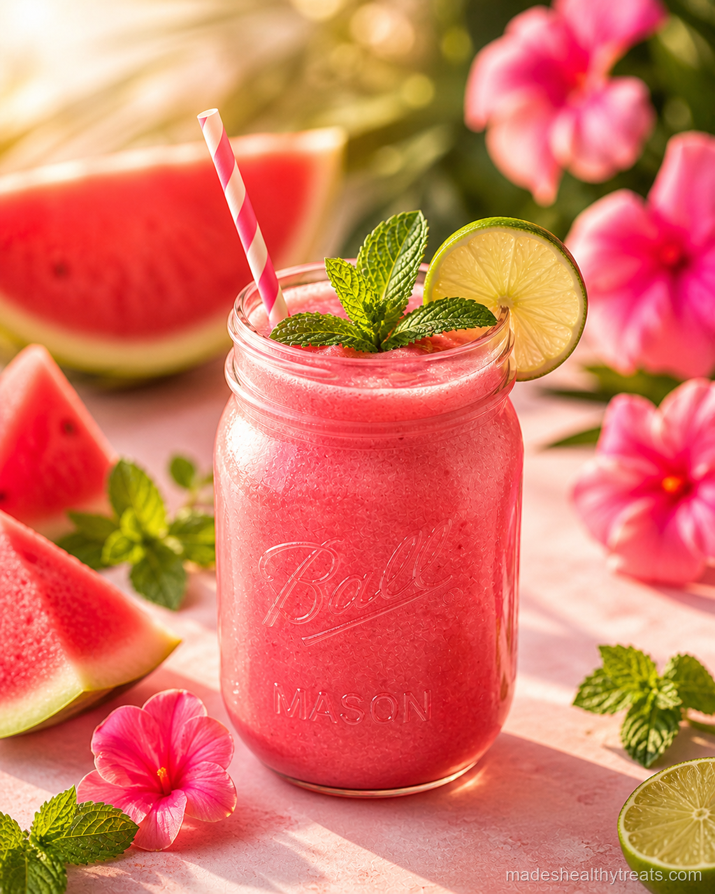
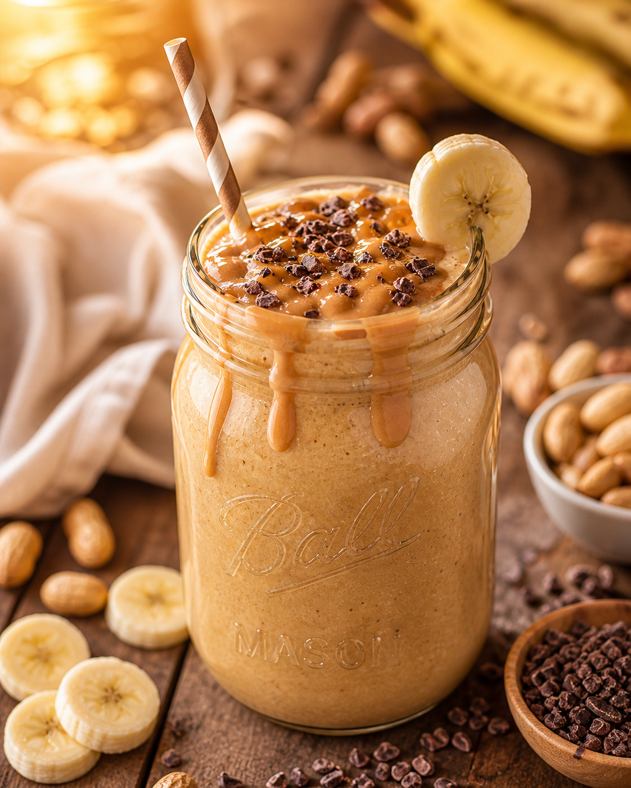

Choose by flavor
All Smoothie Recipes
Choose a fruit, a creamy base, or a bright green blend. Each recipe includes steps and ways to adjust it.
Green smoothie
Spinach Cucumber Banana Smoothie
Fruit & filling blends
Mango Pineapple Banana Smoothie
Bright fruit blends
Papaya Carrot Orange Smoothie
Yogurt & kefir
Berry Kefir Smoothie
Citrus & spice
Orange Lemon Ginger Drink
Green blends
Matcha Banana Chia Smoothie
Citrus & spice

Watermelon Mint Cooler
Fruit & filling blends

Peanut Butter Banana Cacao Smoothie
Yogurt & kefir
Acai Blackberry Kefir Smoothie
Fresh pages in the scrapbook
Fruit, flavor, and a little autumn comfort
Four new smoothies with practical ingredient choices and plenty of ways to adjust your blend.
Smoothie
Blender recipe
Papaya Lime Smoothie Without Banana
About 10 min · 2 small glasses (about 2 cups)
Gather the ingredients →Smoothie
Blender recipe
Mango Passion Fruit Smoothie
About 10 min · 2 small glasses (about 2 cups)
Gather the ingredients →Smoothie
Blender recipe
Guava Strawberry Smoothie
About 10 min · 2 small glasses (about 2 cups)
Gather the ingredients →Smoothie
Blender recipe
Pumpkin Oat Smoothie Without Banana
About 15 min · 2 small glasses (about 2 cups)
Gather the ingredients →